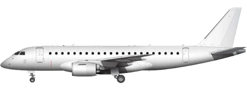

Embraer E-Jet E2

E175
E190
E195
Game Stats
Other Information
The Embraer E-Jet family is a series of regional, dual engine aircraft.
In-Game
The E195 is one of the few aircraft that have over 1,000 units at around 1,400. The next popular is the E190 at 460, and then the E175 at around 290 units in circulation.
Specs
Trivia
- The first E2 jet to be released was the E190-E2, while the latest is the E175-E2.
- A Boeing-Embraer joint venture deal that was canceled in 2020 may have affected orders for the E2 family, due to customers waiting for the deal to be signed.
- This aircraft was meant to be a competitor to the A220 , with the E195-E2 being of an in-between size to the -100 and -300 variants..